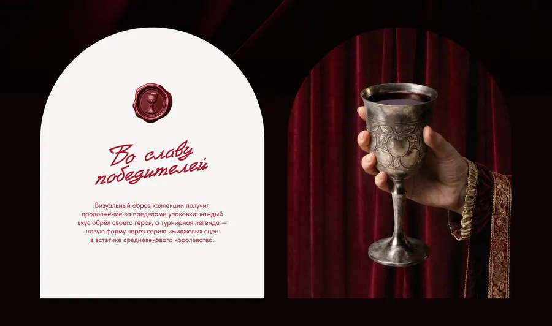
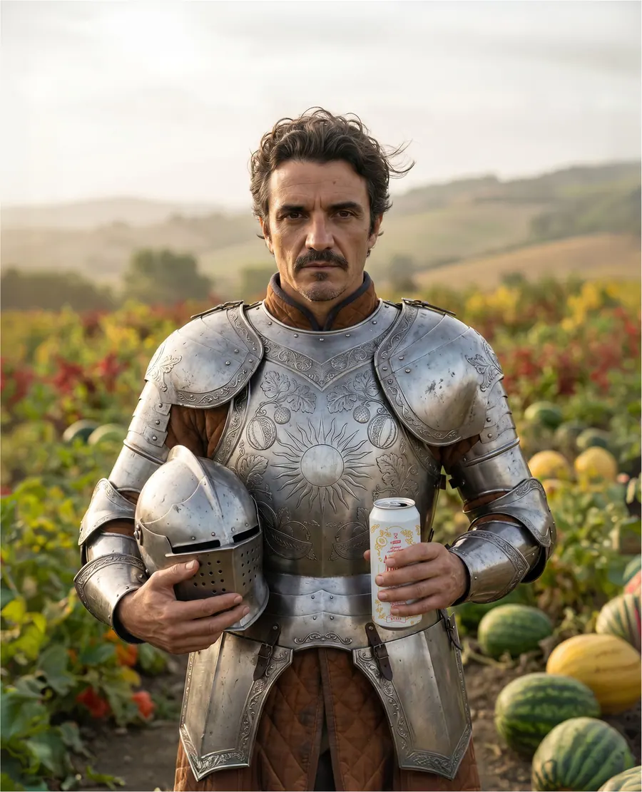
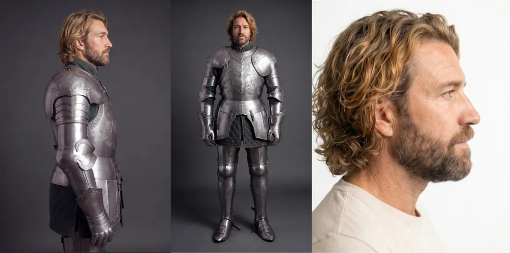
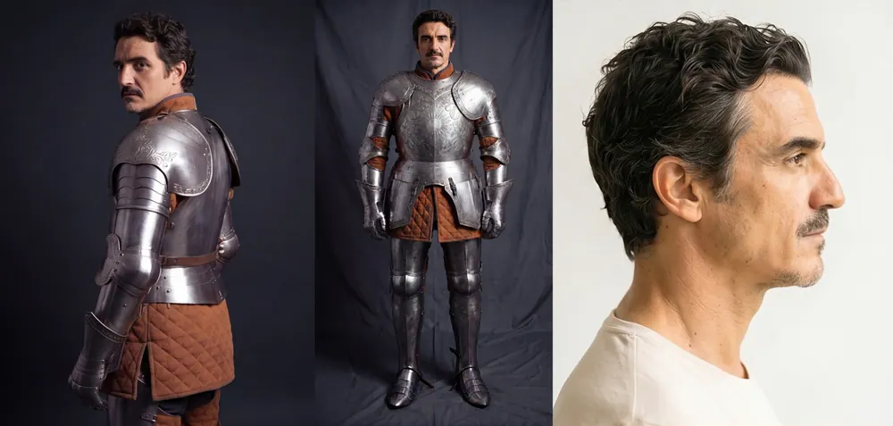
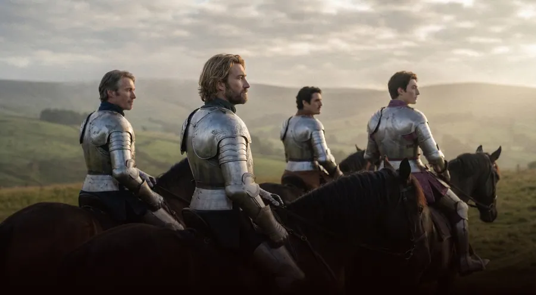
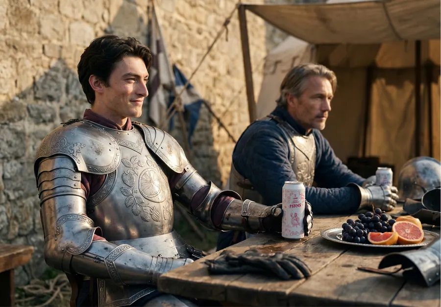
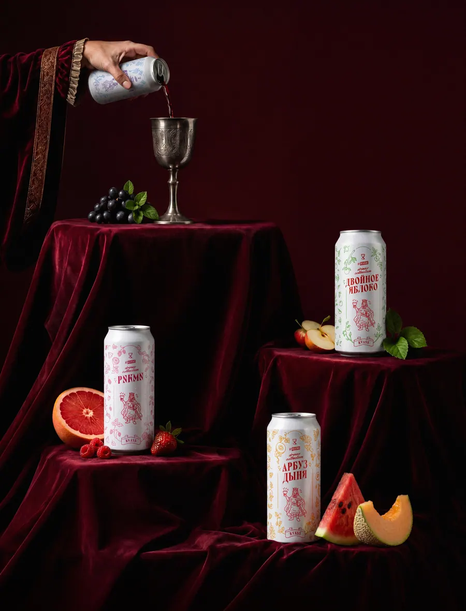
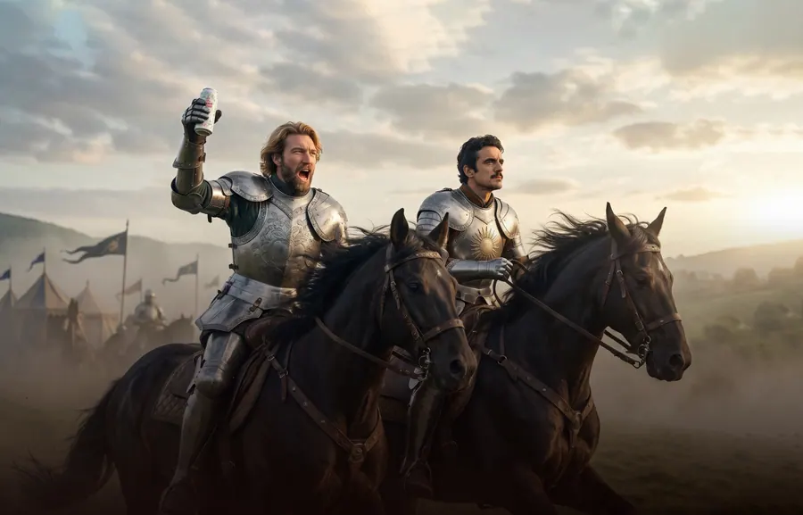

HT Reviews Drinks Collection02
Серия упаковок ароматизированного кваса и имиджевая кампания в эстетике средневекового королевства: четыре вкуса стали рыцарями «Великого турнира вкусов».

Не просто банка, а вселенная, в которой у каждого вкуса есть свой герой.
«HT Reviews Drinks Collection» — серия упаковок для кваса, концепт мерча для HT Reviews. В основе проекта — идея «Рыцарского турнира вкусов»: четыре популярных вкуса стали героями собственной вселенной.
Ежегодно в королевстве HT Reviews проходит Великий турнир вкусов: лучшие вкусы сражаются за право стать выбором короля.
В честь победителей на банках появляется образ короля — символ признания и высшей награды. У каждого вкуса свой рыцарь и своё королевство.
- Виноград-мятаРыцарь Горного королевства свежести
- Двойное яблокоРыцарь Лесного королевства диких яблонь
- Арбуз-дыняРыцарь Южного солнечного королевства
- PinkmanРыцарь Королевства розового шторма


Белая банка, гравюра с королём и свой цвет у каждого вкуса.
Банки собраны по одной системе: светлый фон, тонкий растительный орнамент, вензель и образ короля. Отличаются они цветом гравюры и надписи — так серия читается как коллекция, а вкус узнаётся с полки.


У каждого вкуса — свой рыцарь и свой пейзаж.
Портреты продолжают историю королевств: яблоневый сад, поле с дынями, скалы над штормовым морем, горы с замком. Для каждого героя собран лист образа — доспех в полный рост и портрет в профиль, — чтобы персонаж оставался узнаваемым во всех сценах.








Турнирная легенда получила продолжение за пределами упаковки.
Серия сцен, объединённых атмосферой средневекового королевства: тост победителей, выезд на турнир, битва, привал в шатре.




Бархат, серебряные кубки и фрукты каждого вкуса.
Предметная съёмка поддерживает ту же историю: тёмно-красный бархат королевского зала и светлые сцены со свежими фруктами.



Шаблоны для публикаций: арки, рамки и вензели.



Визуальный образ коллекции вышел за пределы упаковки.
Разработаны дизайн упаковки, образы моделей и серия имиджевых сцен, объединённых атмосферой средневекового королевства. У каждого вкуса появился свой герой, а турнирная легенда получила продолжение в серии сцен.